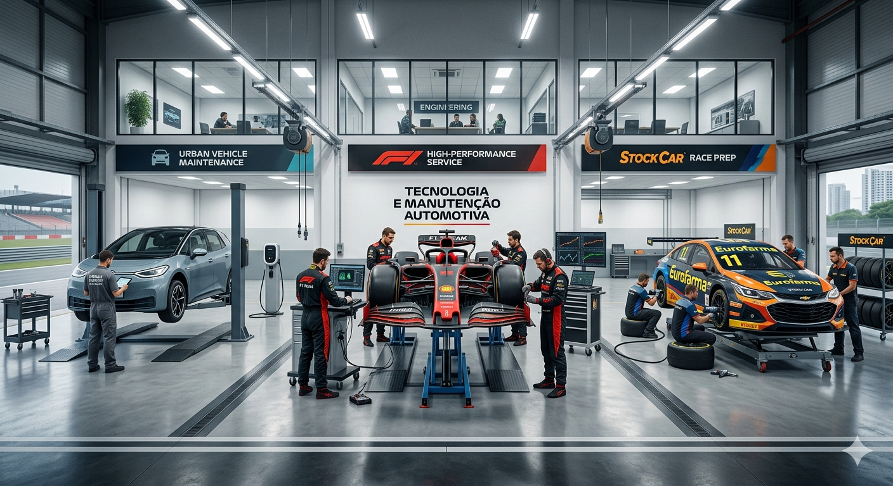

Manutenções automobilísticas
Seja para enfrentar o trânsito da Faria Lima, as curvas de Interlagos a 250 km/h ou a aerodinâmica extrema de um GP de Mônaco, a manutenção é o que separa o sucesso do desastre. No entanto, a filosofia por trás de cada "check-up" é drasticamente diferente.
Carros Urbanos: A Arte da Prevenção e Longevidade
Para o motorista comum, manutenção é sinônimo de custo-benefício e segurança. O objetivo é fazer o veículo durar 100.000 km ou mais sem surpresas no bolso.
Foco: Fluidos, suspensão e pneus.
O "Pulo do Gato": A troca de óleo é a manutenção mais crítica. Negligenciá-la cria a famosa "borra", que destrói o motor por falta de lubrificação.
Intervalo: Medido em meses ou milhares de quilômetros (ex: a cada 10.000 km).
Curiosidade: Peças de carros de rua são projetadas com uma "margem de segurança" imensa para aguentar buracos e combustíveis de baixa qualidade.
Stock Car: Brutalidade e Resistência Térmica
Na Stock Car, os carros são "monstros" de chassi tubular. A manutenção aqui é focada em resistência mecânica, já que o contato físico entre os carros e as zebras altas são constantes.
Foco: Frenagem e arrefecimento.
Desafio: Como os carros usam motores V8 potentes e pesados, o calor gerado é imenso. A manutenção pós-corrida envolve desmontar toda a suspensão para procurar microfissuras causadas pela vibração extrema.
Troca de Peças: Discos de freio podem chegar a 800°C e, muitas vezes, são trocados a cada rodada dupla para evitar fadiga.
Fórmula 1: Engenharia de Precisão Cirúrgica
Na F1, não se faz "manutenção", faz-se reconstrução. O carro é projetado para operar no limite absoluto da física; se uma peça durar 1 km a mais do que o necessário, ela é considerada "pesada demais".
Aerodinâmica e sensores.
A Vida Útil: Motores (Unidades de Potência) são mapeados para durar cerca de 7 a 8 finais de semana de corrida. Após cada sessão, o óleo é analisado em laboratório para detectar partículas de metal que indiquem desgaste prematuro.
Tolerância Zero: Enquanto no seu carro uma folga de 1 mm pode passar despercebida, na F1, ajustes de 0,1 mm alteram completamente o comportamento do carro.
Data da postagem: 20/03/2026 as 00:01h